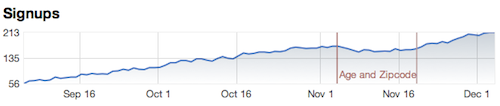

Metrics
A good starting point for improving — on anything — is measuring. Vanity allows you to measure multiple metrics, best way to tell how well your experiments are doing.
Startup metrics for pirates: AARRR!
- Acquisition
- Activation
- Retention
- Referral
- Revenue
Defining a Metric
Vanity always loads metrics defined in the experiments/metrics directory. A metric definition is a Ruby file that looks like this:
metric "Signup (Activation)" do description "Measures how many people signed up for our awesome service." end
That’s a basic metric and you feed it data by calling the track! method. For example:
class AccountsController < ApplicationController
def create
@person = Person.new(params[:person])
if @person.save
track! :signup # track successful sign up
UserSession.create person
redirect_to root_url
else
render :action=>:new
end
end
end
The metric identifier is the same as the file name. The above example defines the metric :signup in the file experiments/metrics/signup.rb.
You can call track! with a value to track. This example tracks how many items were bought during the day:
def checkout track! :items, @cart.items.count . . . end
Calling track! with no value is the same as calling with one, and for convenience you can pass zero and negative numbers, both will be ignored.

Define, track, and you’re ready to roll.
Metrics From Your Database
If you already have the data, why not use it?
This example defines a metric for signups, based on the number of Account records created each day:
metric "Signup (Activation)" do description "Measures how many people signed up for our awesome service." model Account end
You don’t need to call track! with this metric, all the data already exists. It’s a simple query to count the number of records created, grouped by their timestamp (created_at). And since it’s querying the database, you’ll immediately see historical data for the last 90 days.
Even though the metric itself doesn’t store any information, it needs to update experiments whenever new records are created. To do that, it registers itself as an after_create callback on the model.
Some metrics measure values, not occurrences. For example, this metric measures user satisfaction by calculating average value from the column rating:
metric "Satisfaction Survey" do description "Measures how many people signed up for our awesome service." model Survey, :average=>:rating end
The aggregates you can use this way are: :average, :minimum, :maximum and :sum.
You can use a condition when the metric only applies to some records. Here’s a metric that only measures unlimited accounts:
metric "Signups to Unlimited" do
description "Signups to our All You Can Eat and Burp Unlimited plan."
model Account, :conditions=>{ :plan_type=>'unlimited' }
end
If you have named scopes, you’ll want to use them instead:
metric "Signups to Unlimited" do description "Signups to our All You Can Eat and Burp Unlimited plan." model Account.unlimited end
When you view this metric, it calculates the number of accounts created on any given day that are currently unlimited plans. So, if ten accounts were created over the past week, and today five of them upgraded to unlimited plan, the metric will show five unlimited accounts (current state) but spread over the past week (their created_at timestamp).
If your metric uses aggregates or conditions, and the aggregate/conditional attributes change over time, and you need to know when the change took place, consider tracking the event.
This example tracks when accounts were created or upgraded to unlimited plan:
metric "Signups (Unlimited)" do
description "Signups to our All You Can Eat and Burp Unlimited plan (including upgrades)."
Account.after_save do |account|
track! if account.plan_type_changed? && account.plan_type == 'unlimited'
end
end
Google Analytics
You can easily include Google Analytics metrics in your Vanity dashboard. You’ll need, in addition to Vanity, to use Garb, a Ruby wrapper for the Google Analytics API.
Login to Google Analytics using either username and password, or OAuth authentication token. Here’s a sample config/environment snippet:
Rails::Initializer.run do |config|
gems.config "vanity"
gems.config "garb"
. . .
config.after_initialize do
require "garb"
ga = YAML.load_file(Rails.root + "config/ga.yml")
Garb::Session.login(ga['email'], ga['password'], account_type: "GOOGLE")
end
end
To define a metric that corresponds to the Google Analytics daily visitors:
metric "Acquisition: Visitors" do description "Unique visitors on any given page, as tracked by Google Analytics" google_analytics "UA-1828623-6", :visitors end
The first argument is the GA profile, the second argument the GA metric name (defaults to pageviews).
You can use the full Garb API by accessing the report directly, for example:
metric "Activation: Signups" do
google_analytics "UA-1828623-6"
report.filters do
eql(:page_path, 'welcome')
end
end
See the Garb documentation and Google Analytics API for more details.
Creating Your Own Metric
Got other ideas for metrics? Writing your own metric is fairly simple.
The easiest way to create your own metric is by adding your own values method, for example:
metric "Hours in a day" do
description "Measures how many hours in each day."
def values(from, to)
(from..to).map { |i| 24 }
end
end
This example is based on Vanity::Metric. You can, of course, base your metric on any other class.
For simplicity, a metric is any object that implements these two methods:
name— Returns the metric’s name, which will show up in the dashboard/report.values— Receives a start date and end date and returns an array of values for all dates in that range (inclusive).
A metric may also implement these methods:
description— Returns human readable description.bounds— Returns acceptable upper and lower bounds (nilif unknown).hook— A/B tests use this to manage their own book keeping.
If you wrote your own metric implementation, please consider contributing it to Vanity so we can all benefit from it. Thanks.
Digging Deeper
All metrics are listed in Vanity.playground.metrics, a hash that maps metric identifier to metric object. Methods like track! and metrics (see A/B tests) reference metrics using their identifier.
On startup, Vanity loads all the metrics it finds in the experiments/metrics directory. The metric identifier is the same as the file name, so experiments/metrics/coolness.rb becomes :coolness.
You can always populate the hash with your own metrics.
When Vanity loads a metric, it evaluates the metric definition in a context that has two methods: metric and playground. The metric method creates a new Vanity::Metric object, and evaluates the block in the context of that object, so when you see the metric definition using methods like description or model, these are all invoked on the metric object itself.
A Vanity::Metric object responds to track! and increments a record in the database (an O(1) operation). It creates one record for each day, accumulating that day’s count. When generating reports, the values method fetches the values of all these keys (also O(1)).
You can call track! with a value higher than one, and it will increment the day’s count by that value.
Any time you track a metric, the metric passes its identifier, timestamp and count (if more than zero) to all its hooks. A/B tests use hooks to manage their own book keeping. When you define an experiment and tell it which metric(s) to use, the experiment registers itself by calling the hook method.
When you call model on a metric, this method changes the metric definition by rewriting the values method to perform a query, rewriting the track! method to update hooks but not the database, and register an after_create callback that updates the hooks.
How about some tips & tricks for getting the most out of metrics (you might call them “best practices”)? Got any to share?